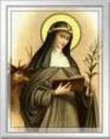

O Purgatório e seus
diferentes
Graus.
LIVRO 4 - Capítulo 6
REVELAÇÕES
DO PURGATÓRIO
Santa Brígida estava rezando, quando
numa visão espiritual, viu um palácio muito grande e cheio de gente,
todos
com roupas brancas resplandecentes e cada um em seu assento. Mas havia um trono
judicial superior aos outros, que estava ocupado por um Ser como o SOL. DELE
saia uma prodigiosa Luz e o resplendor era de dimensões notáveis na longitude,
latitude e profundidade. Próximo ao trono estava uma VIRGEM com uma preciosa
coroa na cabeça, e todos do palácio serviam Aquele que estava no trono brilhando
como um SOL, dando-LHE mil louvores com hinos e cânticos.
Atrás DELE, vi um negro, como se
fosse um etíope, feio e de aspecto abominável, cheio de imundice e inflamado de cólera,
que começou a gritar dizendo: "Ó JUIZ justo, julga
esta alma e ouve as suas obras, porque pouco lhe resta de estar no corpo, e me dá
licença para que atormente a alma e o corpo no que for justo".
Depois, a Santa viu um soldado armado junto ao trono, com aspecto modesto, sábio nas
palavras e educado em seus gestos, dizendo: "Ó
JUIZ, vês aqui as boas obras que esta alma fez até hoje".E logo
se ouviu uma voz do trono dizendo: "São, pois,
os vícios que existem nesta alma, mais que as virtudes. Não é justiça que tenha a
soma dos vícios como parte da virtude, nem elas podem se juntar".
Em seguida disse o negro: "Para mim é de justiça
que esta alma me seja entregue; que ela tenha vícios não importa, porque estou cheio
de maldades, e assim, ela estará bem comigo". Disse o soldado:
"A misericórdia de DEUS acompanha todas as pessoas
até a morte, e até que a alma tenha saído do corpo não se pode dar uma sentença;
e esta alma, sobre a qual pleiteamos, ainda está no corpo e tem sua liberdade
para escolher o seu caminho".
Replicou o negro: "A Escritura que não pode mentir diz: Amarás a DEUS sobre
todas as coisas e a teu próximo como a ti mesmo. E tudo que esta alma tem feito é por
temor, não por amor a DEUS, e todos os pecados que ela confessou, foi com pouca contrição
e arrependimento. Assim sendo, ela não merece o Céu, justo é que ela seja enviada
ao inferno, pois seus pecados estão aqui absolutamente claros diante da Justiça
Divina, e deles, ela nunca teve uma verdadeira contrição e arrependimento".
Disse o soldado: "Esta infeliz, esperou e acreditou que assistida pela graça teria essa
verdadeira contrição".
Respondeu o negro: "Tens trazido aqui todo bem feito por esta alma, todas as sua
palavras e pensamentos que possam lhe servir para a salvação; mas tudo isto não
é suficiente nem com muita boa vontade, comparando ao que vale um verdadeiro ato de
contrição e arrependimento, nascido da caridade Divina com fé e esperança; e por
conseguinte, não pode servir para apagar todos os seus pecados. Isto porque, a
Justiça é de DEUS, definida em sua eternidade, que ninguém se salvará sem
arrependimento; e como é possível que DEUS vá contra este seu decreto eterno?
Resulta que, com toda razão peço esta alma para ser atormentada com a pena eterna
no inferno".
O soldado não replicou, e logo
apareceram inúmeros demônios, semelhantes as centelhas que saem de um fogo ardente,
e uma voz clamava dizendo ao que estava no trono:
"Bem sabemos que é um DEUS em três Pessoas Divinas, que não tem princípio e nem fim, nem
existe outro DEUS senão TU, que é o verdadeiro Amor (Caridade), em Quem se junta
a Misericórdia e a Justiça. TU está em TI Mesmo desde o princípio, não há em TI
nenhuma modificação ou inconstância, TU és o Mesmo, tudo está em TI
perfeitamente acabado e completo como convém a um DEUS; fora de TI não existe
nada, e sem TI não existe satisfação e nem alegria".
"TEU Amor fez os Anjos
com o poder de TUA Divindade, e os fizestes segundo a VOSSA infinita
Misericórdia. Mas depois que interiormente nos inflamamos com a soberba, inveja
e avareza, TUA Caridade, que ama a Justiça, jogou-nos do Céu com o fogo de nossa
malícia ao incompreensível e tenebroso abismo que se chama inferno. Assim fez
então TUA Caridade, que também não se afastará agora de TEU justo julgamento,
que se faz segundo a TUA Misericórdia, ou segundo a TUA Justiça. E ainda nos
atrevemos a dizer, que se o que amas com preferência a todas as coisas, que é a
VIRGEM MARIA, TUA MÃE e que TI gerou, e que nunca pecou, se tivesse pecado
mortalmente e morrido sem contrição Divina, amas tanto a Justiça, que sua alma
nunca teria subido ao Céu. Logo, ó JUIZ, porque não declaras ser nossa esta
alma, para que a atormentemos segundo as suas obras"?
 Ouviu-se depois o som de
uma trombeta e todos ficaram em silêncio, e uma voz disse: "Calai e ouvi todos vocês, Anjos, almas e demônios, vai falar a MÃE DE DEUS".
Em seguida a VIRGEM MARIA apareceu diante do trono
do JUIZ, trazendo muitas coisas escondidas embaixo do manto, e disse aos demônios:
"Vocês, inimigos, perseguis a misericórdia, e sem nenhuma
caridade pregais a justiça. Ainda que seja verdade que esta alma se acha em falta
com as boas obras, e por falta delas não possa entrar no Céu, olhe o que trago
debaixo de meu manto. E levantando um painel por ambos lados, via-se uma pequena
igreja e nela alguns religiosos; e pelo outro lado viam-se homens e mulheres,
amigos de DEUS, e todos rezavam a uma só voz, dizendo: SENHOR, tenha
misericórdia dessa alma".
Ouviu-se depois o som de
uma trombeta e todos ficaram em silêncio, e uma voz disse: "Calai e ouvi todos vocês, Anjos, almas e demônios, vai falar a MÃE DE DEUS".
Em seguida a VIRGEM MARIA apareceu diante do trono
do JUIZ, trazendo muitas coisas escondidas embaixo do manto, e disse aos demônios:
"Vocês, inimigos, perseguis a misericórdia, e sem nenhuma
caridade pregais a justiça. Ainda que seja verdade que esta alma se acha em falta
com as boas obras, e por falta delas não possa entrar no Céu, olhe o que trago
debaixo de meu manto. E levantando um painel por ambos lados, via-se uma pequena
igreja e nela alguns religiosos; e pelo outro lado viam-se homens e mulheres,
amigos de DEUS, e todos rezavam a uma só voz, dizendo: SENHOR, tenha
misericórdia dessa alma".
Reinou um grande silêncio e NOSSA
SENHORA prosseguiu: "A Sagrada Escritura diz que aquele
que tem uma verdadeira fé pode mudar os montes de um lugar para outro. O que não pode
fazer então os clamores e súplicas de todos aqueles que tem fé e servem a DEUS
com fervoroso amor? O que não podem alcançar os amigos de DEUS, que rogam e
pedem por esta alma, para que fosse afastada do inferno e conseguisse o Céu, e
bem mais ainda quando por suas boas obras não procuraram outra vantagem que os
bens celestes para aquele que necessitava? Porventura, não podem as lágrimas e
as orações de todos os bem-aventurados ajudar a levantar esta alma, para que
antes de sua morte tenha uma verdadeira contrição com o Amor de DEUS? Eu também
unirei os meus rogos as orações de todos os Santos que estão no Céu, a quem
esta pessoa honrava com particular veneração".
"E a vós demônios, os mando
da parte do JUIZ e de seu poder, que atendais em sua justiça ao que estão vendo agora".
E todos responderam numa só voz:
"Vemos que no mundo as lágrimas e o arrependimento aplacam a ira de DEUS, assim
os pedidos que são feitos O inclinam a Misericórdia com Amor".
Depois disto, ouviu-se uma voz que saiu Daquele que estava sentado no Trono resplandecente:
"Pelos rogos de Meus amigos, esta pessoa
terá contrição antes da morte e não irá para o inferno, irá para o Purgatório
com os que ali padecem tormentos por causa de seus pecados: e assim que terminar
de pagar todos os seus pecados, receberá seu prêmio no Céu, com aqueles que
tiveram fé e esperança, mas com pouca caridade". E assim
que ouviram isto, os demônios fugiram.
Depois, Santa Brígida viu que foi aberto
um abismo profundo tenebroso, no qual havia um forno imenso incandescente, e no meio
daquele fogo sobrenatural estavam os demônios e as almas vivas, que se abrasavam
ardendo num calor insuportável e impiedoso. Sobre aquele forno estava a alma
cheia de aflição. Tinha os pés fixos numa haste do forno, com o corpo levantado,
e não estava no mais alto nem no mais baixo do forno. Sua figura
tinha um aspecto horrível. O fogo parecia sair debaixo dos pés da alma e vir
subindo, como a água sobe por um cano; e se comprimindo violentamente, passava
por cima da cabeça da alma, de modo que por todos os seus poros e veias corria
um fogo abrasador. As orelhas lançavam fogo como de uma forja, que com o
contínuo sopro lhe atormentava o cérebro.
Os olhos estavam torcidos e
afundados, como se estivessem na nuca. A boca estava aberta e a língua enfiada pelas
aberturas dos narizes, e pendurada até os lábios. Os dentes eram agudos como
cravos de ferro, fixos no paladar. Os braços aumentaram tanto que chegavam até
os pés. As mãos estavam cheias e comprimiam sebo e peixe incandescentes. A pele
que cobria o corpo da alma, era suja e asquerosíssima, tão feia e fria, que só
de ver causava tremor, e dela saía uma matéria como de uma úlcera inflamada com
sangue e pus, com um fedor tão horrível, que não se pode comparar com nada
asqueroso do mundo.
Depois de ver este tormento,
a Santa ouviu uma voz que saía do íntimo daquela alma, que repetiu cinco vezes:
"Ai de mim! Ai de mim"!
Clamando com toda força e derramando abundantes lágrimas. "Ai de mim que tão pouco dei atenção e amei a DEUS pelas Suas Supremas
Virtudes e pelas graças que me concedeu, e que eu não soube aproveitá-las! Ai de mim,
que não temi como devia a Justiça de DEUS! Ai de mim, que amei os prazeres de meu Corpo
e de minha carne pecadora! Ai de mim, porque conheci os terríveis Luiz e Juana"!
E logo o Anjo disse a Santa Brígida:
Eu vou lhe explicar esta visão. Aquele palácio que você viu é a semelhança do Céu.
A multidão que estava nos assentos e tronos com veste branca e resplandecentes
são os Anjos e as Almas dos Santos. O SOL que estava no trono mais alto, é JESUS
CRISTO na sua Divindade. A mulher é a VIRGEM MÃE DE DEUS. O negro é o diabo que
acusa a alma e quer se apossar dela. O soldado é o Anjo da Guarda, que apresenta
as boas obras feitas por aquele homem. O forno incandescente é o inferno, que
permanece ardendo com suas terríveis chamas em toda pujança, e tão violentas
elas são, que se o mundo com tudo o que tem se incendiasse, ainda não podia se
comparar com a veemência e o horror daquele fogo. No inferno ouvem-se diversas
vozes, todas contra DEUS, e todas principiam e acabam com um ai, um grito de
horror, de angústia e de sofrimento. E as almas parecem pessoas, cujos membros
se estendem e são atormentados pelos demônios, sem descanso algum. Por outro lado,
as almas que estão a se abrasar no fogo que arde na fornalha das trevas eternas,
não têm todas as mesmas penas. Tudo é determinado pela Justiça Divina pela
grandeza e imensidão dos pecados de cada uma.
Aquele tenebroso lugar que viste
ao redor do imenso forno, é o limbo, que participa das trevas do forno, mas não de suas penas, e ambos são lugares do inferno, e os que ali entram, nunca alcançarão
à vista de DEUS. Acima dessas trevas, ou seja, bem perto do inferno, está a maior
pena que as almas podem sofrer no Purgatório. E para além deste lugar, na outra
extremidade, há outro lugar, onde se sofre a pena menor do Purgatório, que
somente consiste em faltas menores, de pecados veniais e outras coisas
semelhantes.
de suas penas, e ambos são lugares do inferno, e os que ali entram, nunca alcançarão
à vista de DEUS. Acima dessas trevas, ou seja, bem perto do inferno, está a maior
pena que as almas podem sofrer no Purgatório. E para além deste lugar, na outra
extremidade, há outro lugar, onde se sofre a pena menor do Purgatório, que
somente consiste em faltas menores, de pecados veniais e outras coisas
semelhantes.
Existe também um outro lugar no
Purgatório, superior a esses dois, onde não se padece outra pena, senão a do
desejo de ver DEUS e gozar da Sua adorável companhia. Nesta purificação
espiritual a alma sente uma indomável vontade de ver e de se aproximar de DEUS,
mas sente que não consegue enquanto não concluir a sua sentença.
Em primeiro lugar, a alma é colocada
sobre as trevas do inferno, onde ela sofre a maior pena do Purgatório, conforme
viste padecer àquela alma. Ali há vermes peçonhentos e animais selvagens; há
calor e frio; existe confusão e trevas vindas das penas do inferno, e umas almas
tem ali maiores penas e tormentos que outras, conforme fizeram maior ou menor
reparação dos seus próprios pecados, até quando as suas almas deixaram os seus
corpos. Logo a Justiça de DEUS tira a alma daquele local e envia a outros
lugares, onde permanecem detidas até alcançar algum refrigério e ajuda de seus
amigos particulares, ou dos sacrifícios e das continuas boas obras da Santa
Igreja. A alma que tem maiores auxílio, mais rápido cumpre sua pena e se livra
daquele lugar. Dali a alma vai para o terceiro estágio, onde não existe mais
pena além do imenso desejo de chegar na presença de DEUS, e de gozar de sua
visão beatífica. Neste lugar existem muitas pessoas há bastante tempo, porque
quando viveram no mundo, não tiveram um perfeito desejo de chegar à presença de
DEUS e desfrutar da alegria e satisfação de estar na presença DELE.
O Anjo também narrou que muitos morrem
tão justos e tão inocentes, que logo após a morte, chegam à
presença de DEUS, gozam da alegria e do prazer de estar junto do SENHOR; outros
morrem, depois de reparar todos os seus pecados no mundo, de modo que suas almas
não recebem nenhuma pena ou castigo. Mas são poucos os que não vão ao lugar
aonde se padece o castigo do desejo de encontrar DEUS, de matar a saudade de
DEUS. As almas que estão nestes três lugares, participam das orações e boas
obras da Santa Igreja, que se faz no mundo; principalmente daquelas que elas
fizeram enquanto viveram, e das que seus amigos fazem por elas depois da morte.
Dessa forma, como os pecados são diferentes e de muitas classes, assim também as
penas são diferentes; significa dizer que no Purgatório existe o local certo
para cada alma pagar sua dívida com a Justiça de DEUS. Assim, todas as orações,
sacrifícios e Santas Missas que forem celebradas em sufrágio das almas, são
providências preciosas, e elas lucram e participam de tudo o que por elas se faz no
mundo.
Prosseguiu o Anjo, seja bendito de
DEUS todo aquele que no mundo ajuda as almas com suas orações e com os seus sacrifícios.
A Justiça de DEUS diz, que as almas que vão se purificar depois da morte com a
pena do Purgatório, podem ser ajudadas com as boas obras de seus amigos e da
Igreja, para que saiam mais cedo.
Depois disto, ouviram-se muitas vozes do
Purgatório que diziam: "Meu SENHOR JESUS CRISTO, justo
JUIZ, envie Seu Amor para aqueles que têm o poder espiritual no mundo, e então
nós poderemos participar mais que agora de seu canto, das lições e dos
oferecimentos".
Em cima, de onde saiam estes clamores
havia uma espécie de casa, na qual se ouviam muitas vozes que diziam: "DEUS pague àqueles que nos ajudam e aliviam as nossas faltas".
Na mesma casa parecia nascer à aurora, e embaixo desta
apareceu uma nuvem que não participava da clareza da aurora, da qual saiu uma grande voz
que disse: "Ó SENHOR DEUS, dá de TEU
incompreensível poder cento por um, a todos os que no mundo nos ajudam e nos
elevam com suas boas obras, para que vejamos a luz de TUA Divindade, e gozemos
de TUA presença e da TUA Divina Face".
Continuação da revelação sobre o Purgatório.
LIVRO Nº 4 - Capítulo 7
 Disse o Anjo a Santa Brígida: Aquela alma
que viste e ouviste a sentença, está na pena mais grave do Purgatório. Isto foi
ordenado por DEUS, porque ela se vangloriava muito com as coisas do mundo e de
seu corpo; mas das espirituais e de sua alma não fazia caso, porque não se
lembrava do muito que devia a DEUS e o desprezava. Por isso sua alma padece no
ardor do fogo e treme de frio; as trevas a deixa cega, a horrível e temerosa
vista de satanás e seus asseclas, e a vozeria e clamor dos demônios a deixa
surda, interiormente padece fome e sede, e exteriormente se sente cheia de
confusão e vergonha.
Disse o Anjo a Santa Brígida: Aquela alma
que viste e ouviste a sentença, está na pena mais grave do Purgatório. Isto foi
ordenado por DEUS, porque ela se vangloriava muito com as coisas do mundo e de
seu corpo; mas das espirituais e de sua alma não fazia caso, porque não se
lembrava do muito que devia a DEUS e o desprezava. Por isso sua alma padece no
ardor do fogo e treme de frio; as trevas a deixa cega, a horrível e temerosa
vista de satanás e seus asseclas, e a vozeria e clamor dos demônios a deixa
surda, interiormente padece fome e sede, e exteriormente se sente cheia de
confusão e vergonha.
DEUS concedeu a esta alma uma
graça especial, não permitindo que os demônios a tocassem e a atormentasse, quando
ocorreu o óbito. Isto aconteceu porque ela se encontrava em início de conversão.
Todo o bem que fez e tudo o que prometeu e deu dos seus bens adquiridos
licitamente, e principalmente as orações dos amigos de DEUS, diminuíram e
aliviaram a sua pena, segundo foi determinado pela justiça Divina. Mas quanto
aos bens que deu os quais não foram adquiridos corretamente, ficou em proveito
daqueles que justamente os possuíam antes, ou lhes servem em seu corpo, se
são dignos disso, segundo a disposição do SENHOR.
Conclusão do assunto sobre o Purgatório.
LIVRO 4 - Capítulo 8
Disse o Anjo a Santa Brígida:
Já ouviste como pelos rogos dos amigos de DEUS aquela alma antes de morrer teve
arrependimento de seus pecados. Nascida do amor de DEUS, o seu arrependimento a
livrou do inferno. Assim, a Justiça de DEUS sentenciou que ela ardesse no
Purgatório por seis períodos de tempo, ou seja, por seis vezes a quantidade de
anos que ela viveu, desde que com pleno conhecimento cometeu o primeiro
pecado mortal até o dia em que por amor a DEUS começou a se arrepender da
transgressão. Este tempo poderá ser reduzido, se receber auxílio do mundo e dos
amigos de DEUS (na Igreja ou no lar).
O primeiro período se compreende
por aquele em que não amou a DEUS por sua Divina paixão e morte, e pelas muitas
tribulações que o SENHOR sofreu para a salvação das almas. O segundo período é
aquele em que não amou a sua própria alma como deveria fazer um cristão
responsável, nem dava graças a DEUS por ter recebido o Batismo, e porque não era
judeu e nem pagão. O terceiro período abraça aquele tempo em que sabendo bem o
que DEUS tinha mandado, teve pouco interesse em fazer ou proceder daquele modo.
O quarto período é aquele em que sabia bem o que DEUS tinha proibido aos que
quisessem ir para o Céu, e atrevidamente fez exatamente aquilo que não podia e
nem devia fazer, se deixando levar pelo desejo sexual e desobedecendo a voz de
sua consciência. O quinto período foi aquele em que não usou a graça Divina que
se lhe oferecia, nem da Confissão, como é absolutamente normal a todas as
pessoas, embora tivesse muito tempo para isso, para revelar o seu arrependimento
pelos pecados cometidos. O sexto período compreende aquele no qual recebia com
pouca frequência o Corpo e Sangue de JESUS porque não deixava de pecar, nem teve
a devida caridade ao recebê-LO no final de sua vida.
Há um
lugar no Purgatório, onde não se padece outra pena senão o desejo de ver e estar
junto de DEUS.
LIVRO 4 - Capítulo 91
Santa Brígida estava rezando por
um sacerdote idoso ermitão, seu amigo, que acabava de morrer, e tinha tido uma vida
exemplar, cheia de grandes virtudes, e já estava num caixão na Igreja pronto
para ser sepultado.
Então lhe
apareceu à SANTA VIRGEM MARIA e lhe disse: "Saiba minha
filha, que a alma deste ermitão, seu amigo, teria entrado no Céu no momento em
que deixou o seu corpo, mas no instante de sua morte ele não teve o desejo de se
apresentar à presença de DEUS e de ver o SENHOR. E por esta razão encontra-se
detido no "Purgatório do desejo", onde não há nenhuma pena, senão somente a retenção do
desejo de ir ao encontro de DEUS. Com tudo, antes que seja sepultado o seu corpo,
a sua alma pelos méritos adquiridos em vida entrará na glória eterna".
A VIRGEM MARIA aproveitou para
instruir Santa Brígida de quanto é importante deixar os acontecimentos nas Mãos
de DEUS como manifestação de amor a DEUS, não se esfalfando preocupadamente em
solucionar dificuldades que fogem totalmente ao controle humano. A confiança em
DEUS é fundamental e necessária como demonstração de amor a DEUS, e ela se
concretiza desde os menores atos de colocar confiantemente nas Mãos do SENHOR, a
súplica de uma orientação, para a solução de algum problema.

 Próxima Página
Próxima Página
Página Anterior
Retorna ao Índice